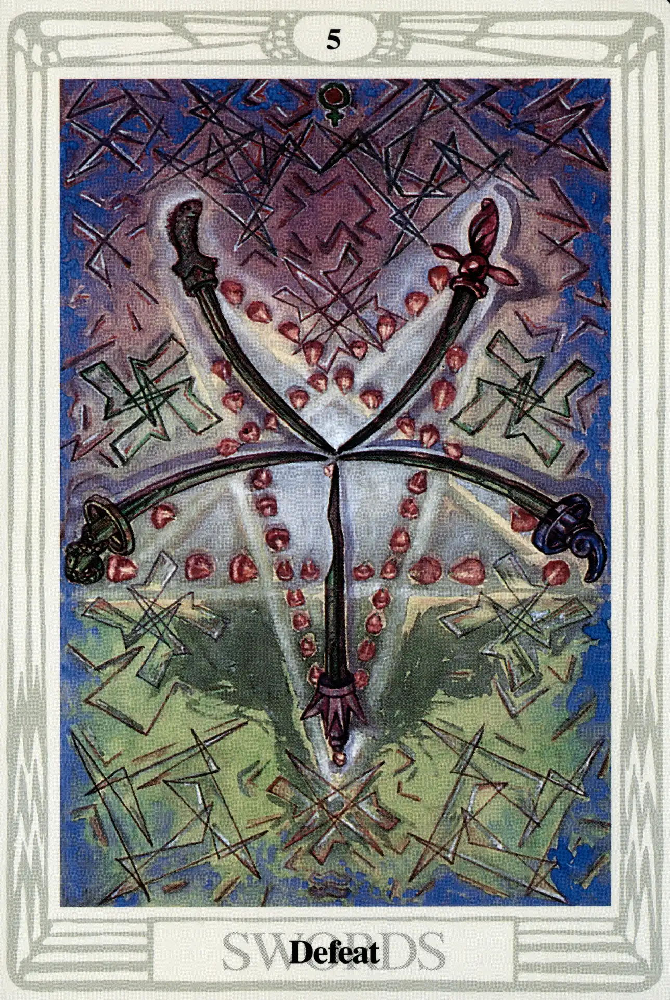

Swords
Five of Swords
Defeat

(Venus in Aquarius)
0° to 10° Aquarius
January 20 to January 29
Original Title: Lord of Defeat.
Golden Dawn Model: Three hands appear from clouds at the bottom card. The right and left hands hold two swords each, the center hand one. The image is that of the Three of Swords, but, in this case, the two swords to the right and to the left are violently parted by a central fifth sword. The rose is destroyed and its five petals are dispersed into the air. There are no white rays.
Prince Scale for Geburah: Bright Scarlet.
The Four Scales for Venus: Emerald Green; Sky Blue; Early Spring Green; Bright Rose or Cerise, rayed Pale Green.
The Four Scales for Aquarius: Violet; Sky Blue; Bluish Mauve; White, tinged Purple.
Formula: 5 (Geburah) of Swords (Yetzirah) + Venus in Aquarius = DEFEAT
This card presents five unmatched, bent, and damaged swords forming an averse pentagram. This pentagram of Defeat is projected upon a field of Harris's geometric and wildly asymmetric wings, some of which form swastikas. As this card was painted at the very height of England's struggle with Nazi Germany, it is easy to speculate that Harris was either consciously or unconsciously projecting magical defeat on this hated enemy. Her concern with the design is clear in her words to Crowley: “I only hope the Swords are alright for I can't do them again. I have followed your instructions with meticulous care.”
Popular opinion holds that the averse pentagram is an evil symbol. The Golden Dawn even cautioned its initiates never to use it magically. Be that as it may, it is the pinnacle of superstition to believe that any symbol, in and of itself, can be either good or evil. The averse pentagram can be used to symbolize an infinite number of perfectly innocuous concepts. However, in this card it really does mean trouble.
Venus rules Aquarius and, for a moment, she is very happy to have him as her date. After all, they're both pacifists. They are a friendly, mellow, and sentimental couple. Unfortunately, this sensitive pair has shown up at the wrong party. A terrible fight has broken out in a very rough and well-armed area of Qabalahville—Geburah, the house of Mars, which is located in Yetzirah (the world of Swords).
Naturally, Venus and Aquarius volunteer to be peacemakers, but they are just too nice, too peaceful, too weak to handle themselves in this violent neighborhood. The inevitable result is Defeat. Sorry kids. I hear things are quieter down in Tiphareth.